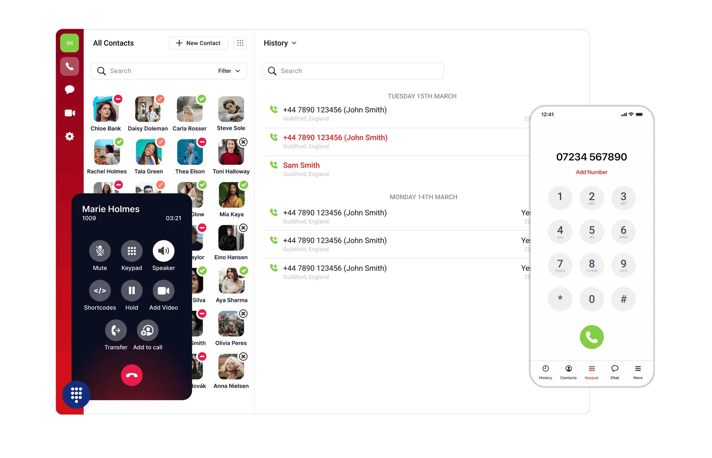

Remote Network and Router Management Platform
Built router management for providers, reducing support load.
Read case studyProposal brief for Peter Halasz
Saw you are hiring a Full Stack Developer for React, Node and in-house products. That usually means active delivery work, with dates and support risk now.

The role says Global 4 is moving in-house products through a major re-architecture. That points to more than normal ticket work: CRM interfaces, REST and SOAP APIs, GraphQL paths and legacy PHP all need care at the same time. Peter's team still has to keep support and service delivery steady for Hosted Telephony customers. If the new hire takes months to land, project work can slow and senior staff can get pulled back into daily fixes.
A dedicated squad works under your product owner for a six-week pilot. It covers product slices while your permanent hire search continues.
Map the re-architecture backlog, PHP sunset points, API contracts and Hosted Telephony touchpoints with Peter's team.
Add two senior full-stack engineers to ship React and Node slices under Global 4's product owner.
Harden REST, SOAP and GraphQL integrations, with QA checks around CRM flows and customer self-serve paths.
Demo shipped work, hand over docs, and agree the next quarter of staff augmentation or hiring cover.
Elinext is a full-cycle software development company, active since 1997, with about 700 in-house specialists and no freelancers. For Global 4, the fit is a dedicated team that can join live product work without adding hiring load. We bring web, full-stack, QA and DevOps skills, plus ISO 9001 and ISO 27001 controls. This suits technical operations, where support quality cannot drop while new code ships. Our customer list includes Siemens, Broadcom, Volkswagen, TRUMPF and TUI. That mix matters here because your plan needs steady delivery, clean handover and secure work on business systems.
Built router management for providers, reducing support load.
Read case studyMade infrastructure self-service simpler for telecom teams.
Read case study